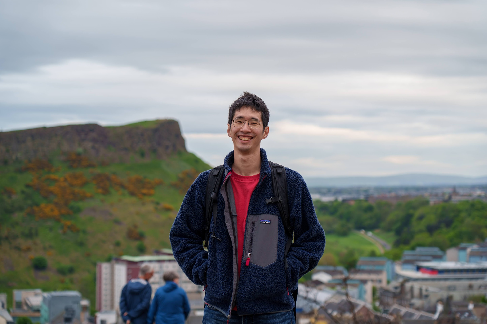

Jordan, Chak-Wa Pui (貝澤華)
Principal Engineer
Huawei Noah's Ark Lab
B.Sc. (SJTU), Ph.D. (cuhk)


Resume/CV (as of Jun. 2022)
Email: jordancwp AT gmail.com
About
I am a Principal Engineer in the AI4EDA Team of Huawei Noah's Ark Lab. I obtained my Ph.D. degree in Computer Science and Engineering from The Chinese University of Hong Kong in 2019. My advisor was Prof. Evangeline F.Y. Young. Previously, I obtained my bachelor degree in Computer Science and Technology from Shanghai Jiao Tong University, in 2015.
During my Ph.D., I mainly focus on physical design but also have experience in logic synthesis and applying ML in EDA. I am one of the main contributors of several state-of-the-art P&R tools and have won top3 in EDA contests many times.
During my time in industry, I have broad experience in logic synthesis, placement, and routing. I have been the architect/major contributor of several key features/tools in the EDA chain, which are verified by the in-house design teams.
Publications ( ,
,  )
)
Journal Paper
[J4] Chak-Wa Pui and Evangeline F.Y. Young, 'Lagrangian Relaxation-Based Time-Division Multiplexing Optimization for Multi-FPGA Systems', ACM Transactions on Design Automation of Electronic Systems (TODAES), 2020.
[J3] Gengjie Chen, Chak-Wa Pui, Haocheng Li, Evangeline F.Y. Young, 'Dr. CU: Detailed Routing by Sparse Grid Graph and Minimum-Area-Captured Path Search', IEEE Transactions on Computer-Aided Design of Integrated Circuits and Systems (TCAD), 2020.
[J2] Peishan Tu, Chak-Wa Pui, Evangeline F.Y. Young, 'Simultaneous Reconnection Surgery Technique of Routing with Machine Learning-based Acceleration', IEEE Transactions on Computer-Aided Design of Integrated Circuits and Systems (TCAD), 2020.
[J1] Gengjie Chen, Chak-Wa Pui, Wing-Kai Chow, Ka-Chun Lam, Jian Kuang, Evangeline F.Y. Young and Bei Yu, 'RippleFPGA: Routability-Driven Simultaneous Packing and Placement for Modern FPGAs', IEEE Transactions on Computer-Aided Design of Integrated Circuits and Systems (TCAD), 2018.
Conference Papers
[C11] Dan Zheng, Xiaopeng Zhang, Chak-Wa Pui, Evangeline F.Y. Young, 'Multi-FPGA Co-optimization: Hybrid Routing and Competitive-based Time Division Multiplexing Assignment', IEEE/ACM Asia and South Pacific Design Automation Conference (ASPDAC), Virtual Conference, Jan. 18-21, 2021.
[C10] Jinwei Liu, Chak-Wa Pui, Fangzhou Wang, Evangeline F.Y. Young, 'CUGR: Detailed-Routability-Driven 3D Global Routing with Probabilistic Resource Model', ACM/IEEE Design Automation Conference (DAC), Virtual Conference, July 19-23, 2020.
[C9] Chak-Wa Pui and Evangeline F.Y. Young, 'Lagrangian Relaxation-Based Time-Division Multiplexing Optimization for Multi-FPGA Systems', IEEE/ACM International Conference on Computer-Aided Design (ICCAD), Westminster, CO, USA, Nov. 4-7, 2019.
[C8] Chak-Wa Pui, Gang Wu, Freddy Y. C. Mang, Evangeline F.Y. Young, 'An Analytical Approach for Time-Division Multiplexing Optimization in Multi-FPGA based Systems', ACM/IEEE International Workshop on System-Level Interconnect Prediction (SLIP), Las Vegas, NV, USA, June 2, 2019.
[C7] Biying Xu, Shaolan Li, Chak-Wa Pui, Derong Liu, Linxiao Shen, Yibo Lin, Nan Sun and David Z. Pan, 'Device Layer-Aware Analytical Placement for Analog Circuits', ACM International Symposium on Physical Design (ISPD), San Francisco, CA, USA, Apr. 14-17, 2019. (Best Paper Award Nomination)
[C6] Gengjie Chen, Chak-Wa Pui, Haocheng Li, Jingsong Chen, Bentian Jiang, Evangeline F.Y. Young, 'Detailed Routing by Sparse Grid Graph and Minimum-Area-Captured Path Search', IEEE/ACM Asia and South Pacific Design Automation Conference (ASPDAC), Tokyo, Japan, Jan. 21-24, 2019.
[C5] Peishan Tu, Chak-Wa Pui, Evangeline F.Y. Young, 'Simultaneous Timing Driven Tree Surgery in Routing with Machine Learning-based Acceleration', ACM Great Lakes Symposium on VLSI (GLSVLSI), Chicago, IL, USA, May 23-25, 2018.
[C4] Chak-Wa Pui, Peishan Tu, Haocheng Li, Gengjie Chen, Evangeline F.Y. Young, 'A Two-Step Search Engine For Large Scale Boolean Matching Under NP3 Equivalence', IEEE/ACM Asia and South Pacific Design Automation Conference (ASPDAC), Jeju Island, Korea, Jan. 22-25, 2018.
[C3] Chak-Wa Pui, Gengjie Chen, Yuzhe Ma, Evangeline F.Y. Young, Bei Yu, 'Clock-Aware UltraScale FPGA Placement with Machine Learning Routability Prediction', IEEE/ACM International Conference on Computer-Aided Design (ICCAD), Irvine, CA, USA, Nov. 13-16, 2017.
[C2] Chak-Wa Pui, Gengjie Chen, Wing-Kai Chow, Jian Kuang, Ka-Chun Lam, Peishan Tu, Hang Zhang, Evangeline F.Y. Young, Bei Yu, 'RippleFPGA: A Routability-Driven Placement for Large-Scale Heterogeneous FPGAs', IEEE/ACM International Conference on Computer-Aided Design (ICCAD), Austin, TX, USA, Nov. 7-10, 2016.
[C1] Wing-Kai Chow, Chak-Wa Pui, Evangeline F.Y. Young, 'Legalization Algorithm for Multiple-Row Height Standard Cell Design', ACM/IEEE Design Automation Conference (DAC), Austin, TX, USA, June 5-9, 2016. (Best Paper Award Nomination)
Honors & Awards
3rd Place Award in ICCAD 2019 Contest on 'System-level FPGA Routing with Timing Division Multiplexing Technique'
1st Place Award in ICCAD 2019 Contest on 'LEF/DEF Based Open-Source Global Router'
ISPD 2019 Best Paper Award Nomination
2nd Place Award in ISPD 2018 Contest on 'Initial Detailed Routing'
3rd Place Award in ISPD 2017 Contest on 'Clock-Aware FPGA Placement'
1st Place Award in ICCAD 2016 Contest on 'NP3: Non-exact Projective NPNP Boolean Matching'
DAC 2016 Best Paper Award Nomination
2nd Place Award in ISPD 2016 Contest on 'Routability-Driven FPGA Placement'
Full Postgraduate Studentship at CUHK, 2015-2019
Experiences
Staff Engineer @Startup
Jun. 2022-present, Shanghai, China
Principal Engineer @Huawei
AI4EDA Team of Noah's Ark Lab
Mar. 2021-Jun. 2022, Shenzhen, China
Lead Software Engineer @Cadence Desgin Systems
Detailed Placement Team of Innovus
May. 2020-Mar. 2021, Shanghai, China
Research Assistant @The Chinese University of Hong Kong
Aug.-Nov. 2019, Hong Kong SAR
Technical Intern @Synopsys
Zebu Back-End Team
May-Aug. 2018, Hillsboro, OR, USA
Software Engineering Intern @Cadence Desgin Systems
Detailed Routing Team of Innovus
May-Sep. 2017, San Jose, CA, USA
Tools
LARF [J4][C9]
CUGR [C10]
Dr. CU [J3][C6]
RippleFPGA [J1][C3][C2]
Ripple [C1]
Professional Services:
Technical Program Committee Member
Design Automation Conference (DAC), 2022
International Conference on Computer-Aided Design (ICCAD), 2022
Conference Reviewer:
Design Automation Conference (DAC)
International Conference on Computer-Aided Design (ICCAD)
International Symposium on Physical Design (ISPD)
Asia and South Pacific Design Automation Conference (ASPDAC)
International Conference on Computer Design (ICCD)
Great Lakes Symposium on VLSI (GLSVLSI)
Journal Reviewer:
Transactions on Computer-Aided Design of Integrated Circuits and Systems (TCAD)
Transactions on Design Automation of Electronic Systems (TODAES)
Teaching
2015-2016 Fall Embedded System Development and Applications
2015-2016 Spring CSCI1520 Computer Principles and C Programming
2016-2017 Fall ESTR1002 Problem Solving by Programming
2016-2017 Spring ENGG1100H Introduction to Engineering Design
2017-2018 Fall CSCI2510 Computer Organization
2017-2018 Spring ENGG5189 Advanced Topics in Artificial Intelligence